Revue de presse sur le "deepfake"
Un "deepfake" capable de duper les présidents
Récemment, François Hollande, ex-président français, s'est entretenu avec Petro Porochenko ex-président
russe. C'est donc pendant une discussion d'environ 15 minutes que les deux ex-dirigeant ont échangé sur
la situation en Ukraine et sur les accords de Minsk.
Cependant, cette discussion avec l'ex-président russe n'était pas réel du moins pas entièrement.
En effet, François Hollande s'est bien entretenu avec quelqu'un mais ce n'était pas Petro Porochenko, il
s'agissait tout simplement d'un "deepfake" réaliser par deux humoristes russes.
Néanmoins, une telle tromperie n'est pas sans conséquences, car Hollande, ne sachant pas cela, a révélé des
informations confidentielles sur les accords de Minsk. Cette conversation s'étant retrouvé sur les réseaux
sociaux,
nombreux sont les internautes à réagir au propos de l'ex président.
Article
de L'union
Ce que m'a appris l'article
Cette article montre que les "deepfake" sont de plus en plus courant
et réaliste, même des dirigeants d'État se font piéger. C'est également
préoccupant, car cette situation peut se reproduire et avoir des conséquences
plus graves.
"Deepfake", on reste sans voix devant sa voix
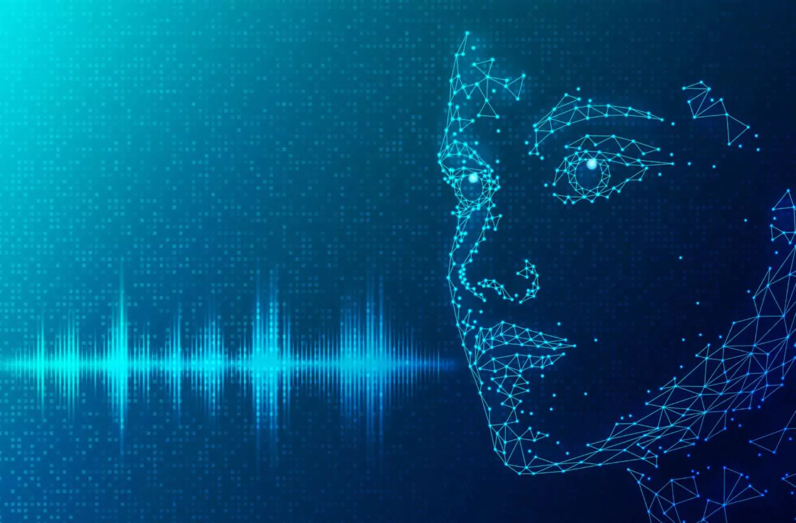
ElevenLabs est un simulateur de voix, très utile pour créer des voix. Il a cependant été détourné de ses
fonctions par un grand nombre d'utilisateurs, car
ce logiciel est récemment devenu accessible aux grand public. Il y a donc rapidement eu des dérives souvent
à caractère raciste, homophobe, etc.
On a par exemple pu entendre Emma Watson en train de lire Mein Kampf.
En effet, il est facile avec tous ces outils de créer une vidéo de toute pièce de manière simple, rapide,
mais surtout ultra-réaliste.
Cette outils a été développer par ElevenLabs, une start-up anglaise.
Ils utilisent l'intelligence artificielle afin de récréer une voix réaliste.
Néanmoins, la start-up, a constaté que des utilisations abusives de leur outil
sont de plus en plus courante. Les concepteurs de ce logiciel ont donc annoncé
qu'ils voulaient durcir le processus d'identification en mettant en place des mesures
de protection supplémentaires. En vérifiant les auteurs des échantillons soumis
et de procéder à des vérifications manuelles.
Article
du Figaro
Ce que m'a appris l'article
Cette article montre qu'il est désormais possible de recréer de
manière très réaliste une voix humaine, utile dans les films pour
recréer les voix d'acteurs décéder, mais comme toutes technologies,
il y a des dérives. Il est cependant, difficile de les repérer.
Quand la pop culture rentre dans la mode
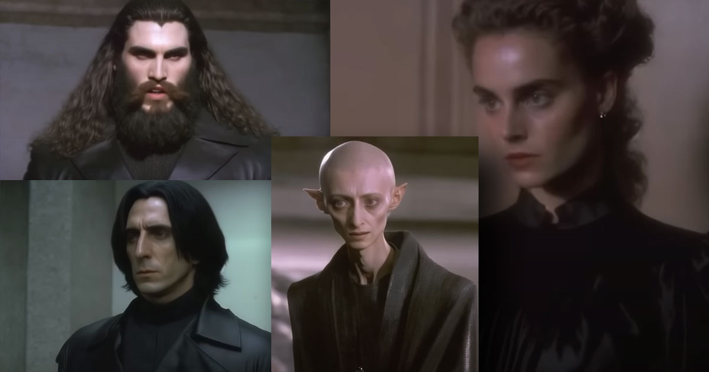
Grace à ChatGPT, Midjourney et D-ID, il est possible depuis quelque semaine
de voir les personnages de "Harry Potter", "Le seigneur des Anneaux", etc
en train de faire des défilés de mode pour balenciaga. Des vidéos à première
vue drôles, à l'exception du fait que toutes les vidéos chantent les louanges de la
marque balenciaga.
Plusieurs "deepfake" promouvant la marque ont fait le tour d'internet.
Cependant, la marque n'en est pas la source. Ce sont les internautes qui leur
octroient une publicité gratuite surtout avec les scandales actuelle de la marque.
Ces vidéos sont donc bien innocentes, mais cela pose des questions sur la
potentielle utilisation malsaine de ces outils qui, en effet, permettent de
créer très facilement des deepfakes. ElevenLab qui permet de refaire des voix à partir
d'un échantillon de 1 minute a d'ailleurs supprimé l'accès gratuit à son
logiciel.
Article de PhotoTrend
Ce que m'a appris l'article
Cette article montre la puissance des intelligences artificielles
comme Midjourney, CHatGPT et d'autre. Dans ce cas ce n'est que pour
créer du contenu divertissant. Mais cette puissance mal utilisée
peut créer des problèmes important.
"Deepfake", des utilisations diverses
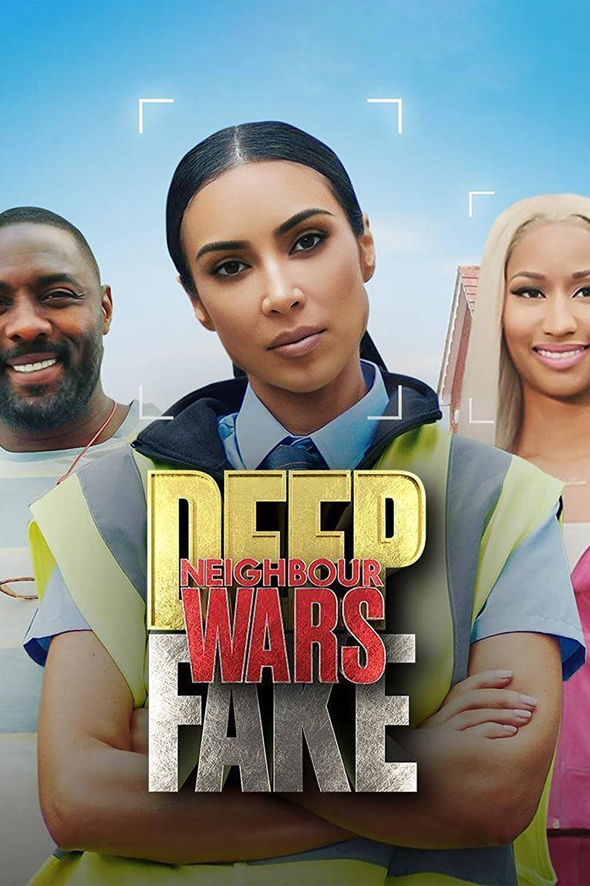
Le "deepfake", permet de recréer des visages et des voix de
manière très réaliste. De plus en plus utilisé dans les documentaires
ou le cinéma afin de rajeunir les stars ou recréer la voix
d'acteur décédé. Cependant, les outils permettant ces prouesses
techniques sont désormais accessible au grand public et souvent
utilisées à des fins malveillantes.
On peut par exemple voir un Barack Obama tenir des propos insultant
ou des séries regroupant Rihanna, Beyoncé et Andy Murray sans qu'ils
aient participé à celle-ci. Pire encore, Volodymyr Zelensky,
qui ordonne à ses soldats de déposé les armes.
Les "deepfake" font également des victimes. En France par exemple
"Jujufitcats" une youtubeuse fitness, reçoit des photos d'elles dénudée
qu'elle n'a jamais prises.
Article de Franceinfo
Ce que m'a appris l'article
Cette article montre une des utilisations de l'intelligence artificielle.
Il est désormais possible de faire jouer des acteurs dans des films ou
série alors que l'acteur n'était pas là. Une question reste sur la légalité
de cette pratique, car cela signifie que des films entiers pour être tourné
sans même payer d'acteur.
Un journal télévisé fictif
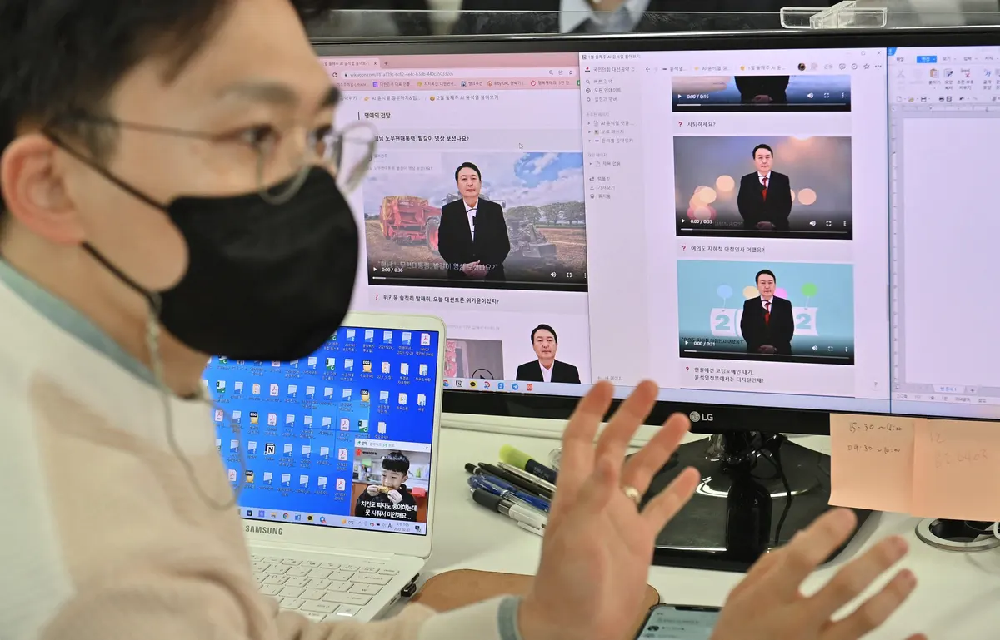
De faux présentateurs télé, un faux plateau, de fausse info, en bref,
une fausse émission télé. En effet, tout est générés par une intelligence
artificielle et les vidéos sont publiées sur les réseaux sociaux afin de
promouvoir des idées pro-Pékin dans l'intérêt du Parti communiste chinois.
Ce trucage et bien d'autre, montre le problème que pause ces "deepfake"
grandissant dans le domaine de l'information. Car grâce à ces technologies
de fausses informations peuvent être véhiculé de manière très convaincante.
l'hypertrucage est donc un danger, et les entreprises développant des outils
de "deepfake" essaient de lutter au maximum contre ces utilisations malveillantes
en durcissant le système d'authentification et en obtenant l'identité réelle
de leurs utilsateurs.
Article de BFMTV
Ce que m'a appris l'article
Cette article montre une des utilisations néfaste et dangereuse de l'IA
avec la diffusion de fausses informations en faisant croire qu'elles sont
encadrées et réels alors qu'il n'en ait rien.
Facebook fait de la pub pour du "deepfake" pornographique
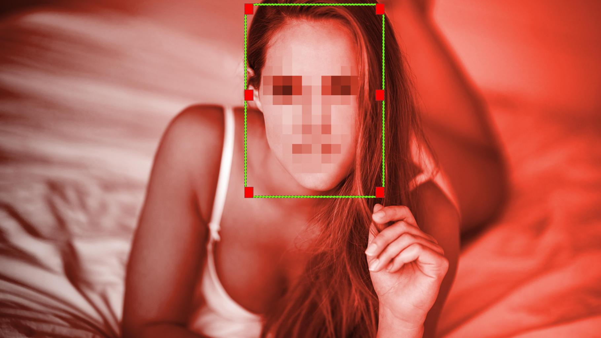
Depuis plusieurs jours, des publicités promouvant une application de
"deepfake" qui incite à faire des montages de vidéos pornographiques
mettant en scène des célébrités, apparaissent sur tous les réseaux sociaux de Meta.
Cette application nommée "FaceMega", ne se revendiquent pas en tant qu'application
pour faire des montages pornographiques, cependant, comme le montre leur publicité
sur Facebook, on peut le comprendre comme tel. Elle était d'ailleurs disponible
sur "Apple Store" et "Play store" gratuitement. Elle est désormais payante
pour 8$/semaines.
On peut très bien imaginer l'utilisation que peuvent en faire les gens.
Par exemple pour de l'intimidation scolaire ou pour nuir à une personne
dans son travail par exemple. Car il suffit d'une simple photo pour réaliser
ce genre de deefake.
D'après l'analyste Genevieve Oh, le trafic et la consultation de sites web spécialisés
dans les deepfakes pornographiques a littéralement explosé. Cette augmentation
n'est pas dû au hasard, elle provient de la plateforme Twitch, après qu'un
streamer a diffusé des montages pornographiques de streameuses célèbres.
Répendant ainsi l'existence de cette pratique au grand public.
Article de Phonandroid
Ce que m'a appris l'article
Cette article montre selon moi l'inaction et la non-réactivité de certains
réseaux sociaux sur le contrôle de la publicité, mais également les dérives
de l'intelligence artificielle et le danger qu'elle représente pour
les personnalitées publiques, mais également anonyme avec des outils puissants
pour appuyer le harcèlement scolaire.
Le pape abandonne sa soutane pour une doudoune
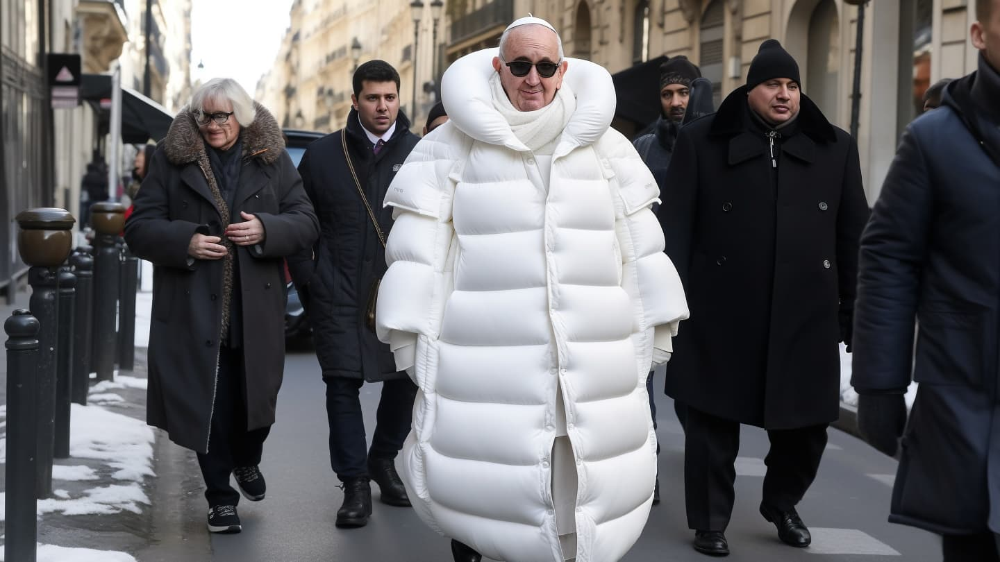
Depuis quelques jours, sur les réseaux sociaux, il est possible
de voir le Pape porter une grosse doudoune blanche. Cette image
est fausse et a été généré par l'intelligence artificielle Midjourney.
Comme a pu le dire la célébrité américaine Chrissy Teigen, il est désormais
très difficile de faire la différence entre une vraie image et une image
générée par une intelligence artificielle ce qui reflètent le ressenti de
beaucoup d'internautes.
Même si ces générations ne sont pas parfaites, il faut regarder dans
les détails pour s'appercevoir de la supercherie. Mais comme notre système
d'information repose sur le scrolling, on ne prête que trop rarement aux détails
d'une image. De plus les intelligences artificielles s'améliorent
de plus en plus, ce qui à terme mènera à des images parfaites et
indésselable.
Article de Clubic
Ce que m'a appris l'article
Le "deepfake" est ici à but récréatif, mais cela montre l'amélioration
des technologies de "deepfake" et leur puissance. J'ai été abasourdis
par le réalisme de ces trucages.
TikTok l'exterminateur de "deepfake"
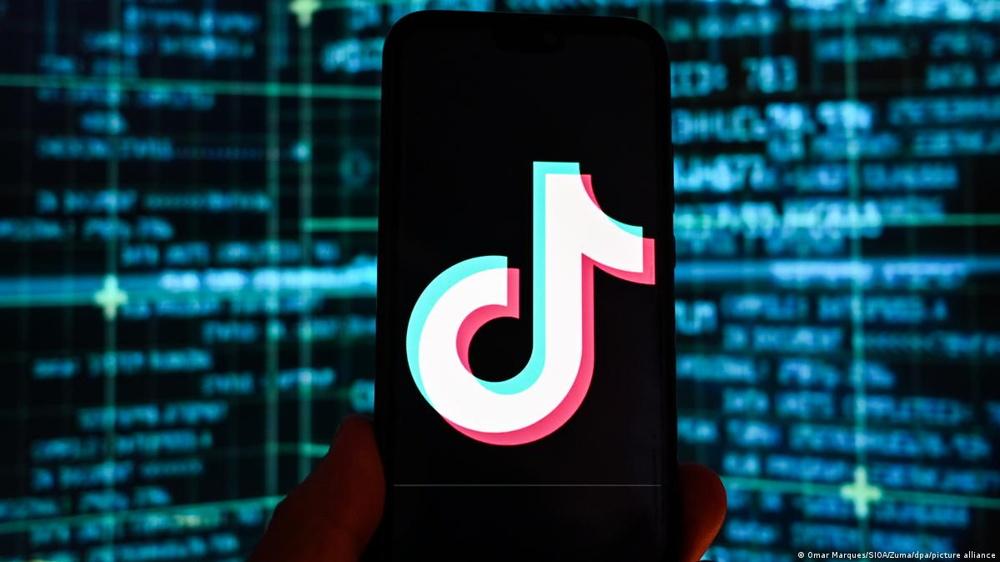
Le réseau social a en effet, annoncé durcir ses règles vis-a-vis
des contenus généré par des intelligences artificielles afin
de faire des "deepfake".
La plateforme empeché déjà la publication de contenus susceptibles
d'induire les utilisateurs en erreur sur des évenements réels.
Désormais, les "deepfake" concernant une personne anonyme et reproduisant
sa voix ou son visage seront interdits. Quant aux personnalités publiques
les médias synthétiques seront interdit s'ils sont diffamatoires ou haineux.
De plus, lorsqu'un "deepfake" qui respecte les règles sera posté, il devra
être mentionné que ce contenu a été modifié.
Article de l'Éclaireur Fnac
Ce que m'a appris l'article
Cette article montre que certains réseaux sociaux, dont TikTok prennent
part à la lutte contre les "deepfake" et la désinformation. C'est donc
pour moi une bonne nouvelle pour l'avenir de l'information.
Un directeur de collège raciste
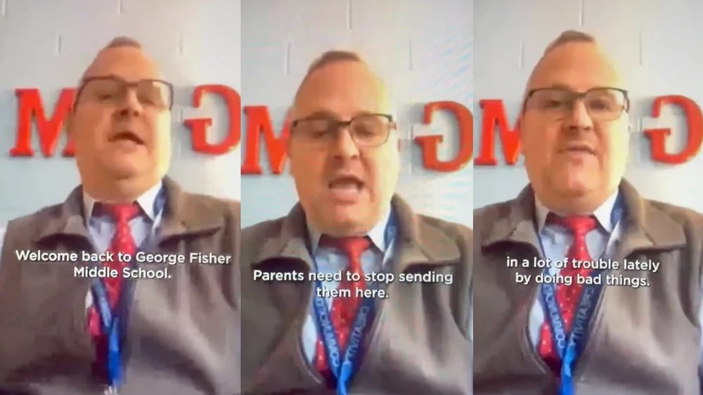
Sur la plateforme TikTok, des vidéos d'un directeur de collège tenant
des propos racistes circulent depuis quelque jours. Ce sont en réalité
des "deepfake" réalisé par trois étudiants d'un collège voisin qui sont
à l'origine de ces vidéos.
L'histoire est cependant plus compliqué, car des parents d'élèves ce sont
plains que ces images sont le reflet d'un problème plus large de comportement
raciste dans les écoles du district.
Les vidéos ont été signalées aux autorités scolaires le 12 février.
Ceux-ci ont déclaré que les auteurs de ces trucages seront traités
conformément au code de conduite du district.
Les parents ont tous de même soutenu le fait que la menace ait été
sousestimé et qu'il aurait fallu prendre des mesures de sécurité.
Article de BFMTV
Ce que m'a appris l'article
Cette article montre le danger que peut avoir l'utilisation de "deepfake"
dans le cadre scolaire. Cette situation aurait pu très mal tourner et on peut
voir que, même si cette vidéo a rapidement été démasqué, des conséquences
demeurent sur le moral des parents élèves.
Elon Musk, le visionnaire drogué
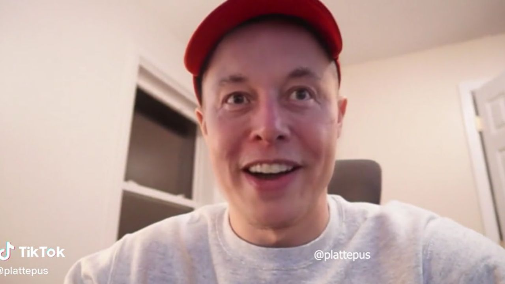
Le patron de Tesla et Twitter avoue se droguer afin de créer le
design de ses voitures. Au vu du caractère de celui-ci, beaucoup
de personnes ont cru à sa déclaration face caméra. Cependant, cette
vidéo n'est en fait pas réel, il s'agit d'un "deepfake".
Il est néanmoins très facile de déceler le fake puisque la personne
ayant posté cette vidéo (plattepus) est en fait un habitué de la vidéo
de synthèse, avec de nombreuse autre vidéo du milliardaire dans des situations
caucasses.
Il n'y a même pas besoin d'aller jusqu'à chercher les sources de cette vidéo
pour déceler le fake, car en regardant de plus près, on peut voir que
la bouche d'Elon Musk ne se ferme pas et que sa voix à un léger décalage
avec l'image.
Article de TF1 INFO
Ce que m'a appris l'article
Ici le "deepfake" est utilisé surtout pour faire rire, mais cela montre
que cette technologie peut être utilisée à des fins plus malveillantes.
5 Moyens de débusquer le "deepfake"
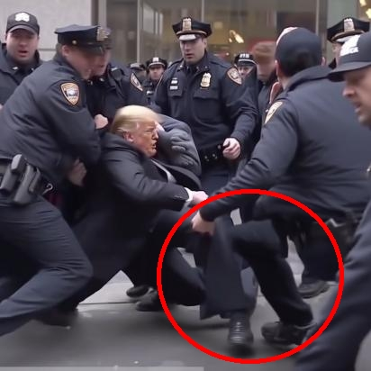
En ce moment les vidéos ou images de synthèse pullulent sur internet,
il devient donc important d'éduquer notre œil à partir à la chasse
au fake.
La première étape est de vérifier la qualité, les "deepfake" surfont
souvent le flou d'arrière-plan, la qualité du premier et souvent extrement
nette alors que l'arrière-plan est flou.
La deuxième étape est de vérifier les ombres, en effet, elles sont
souvent inexistante, pas au bon endroit ou pas avec les bonnes
proportions.
La troisième étape est de vérifier le titre de ces vidéos de
synthèse sont souvent en majuscule, avec des points
d'exclamation afin d'attirer le regard.
La troisième étape est de vérifier les défauts de montage,
portez votre attention sur les bordures du visage, il arrive parfois
que des imperfections apparaissent.
La dernière étape est de vérifier les sources, c'est la méthode la
plus simple et la plus courrante pour déceler le vrai du faux.
Article de Cerfia
Ce que m'a appris l'article
Cette article permet de nous entrainer à repérer les "deepfake" pour lutter
contre la désinformation et les dangers qu'ils représentent.
Un deepfake de Keanu reeves nous alerte contre les arnaques en ligne
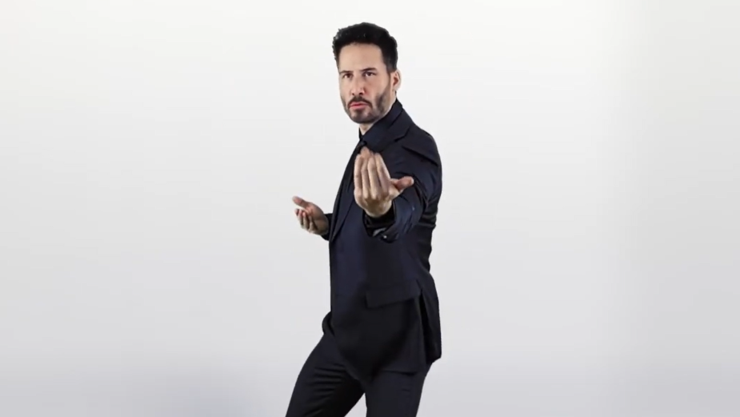
La banque HomeEquity, basée à Toronto, ont utilisé le visage de
Keanu reeves, l'acteur charismatique de "Jhon Wick", dans plusieurs
vidéos informatives contre les escroqueries en ligne.
Ces vidéos ont été réalisé pour contrer la vraie arnaque nommé
Keanu Reeves qui utilise le charisme de l'acteur pour
faire des vidéos fake afin de tromper la confiance des internautes et leur
faire dépenser leur argent dans des arnaques. D'après une étude de la Federal
Trade Commission, les internautes auraient perdu 304 millions de dollars
à cause de ce type d'arnaque.
La banque cité plus haut a donc décidé d'utiliser le fonctionnement de
la toute première arnaque pour prévenir ce genre d'arnaque.
Article de La réclame
Ce que m'a appris l'article
Cette article montre que certaine entreprise essaye de lutter contre
les arnaques montées grace au "deepfake", ce qui pour moi est une bonne
chose pour agir de manière préventive et éduquer la population
à ce nouveau type d'arnaque et de technologie.
Tailor swift manipulé par ses fans
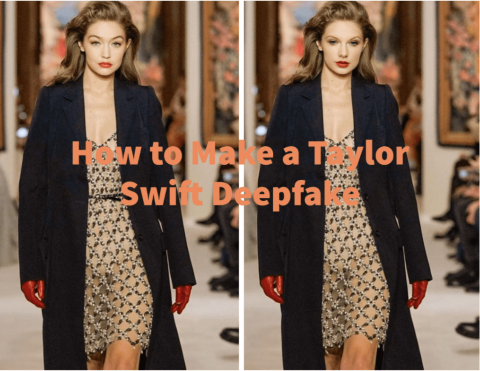
Une intelligence artificielle qui réplique la chanteuse Taylor swift
et qui est contrôlé par ses fans afin de faire des blagues. Ils ne sont, pour
la plupart, pas mal intentionné a constaté la vraie Taylor swift.
Il existe même des tutoriels pour répliquer leur star préférée.
Ce n'est cependant pas le cas de tous les utilisateurs d'outils de deepfake
et des utilisations malveillantes de ce genre d'outils pourrait créer de plus grave
problème. Par exemple, si une réplique d'un dirigeant d'État était
utilisé à des fins malveillantes et pourrait créer des incidents plus grave.
Article de Courrier International
Ce que m'a appris l'article
Cette article montre une utilisation innocente du "deepfake" mais pose
également des questions quant à l'utilisation de ce genre d'outils pour
de futur "deepfake".
L'IA le nouveau joué des escrocs
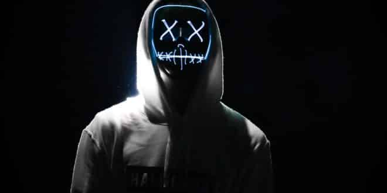
Si la fonction de base de ChatGPT est de répondre à vos questions
afin de vous aider, les escrocs lui ont trouvé une tout autre utilité.
Il l'utilise pour créer des chatBots, des "deepfake", des campagnes de pishing
et des logiciels malveillants.
Il existe différente utilisation de l'IA pour monter une escroquerie,
par exemple ChatGPT pour créer des messages de pishing plus rapidement,
Des IA comme ElevenLabs ou Midjourney pour créer des vidéos de personnalité
connue imitée à la perfection ou pour simuler des appels téléphonique réaliste dans
le but de vous estorquer de l'argent.
Article de Dynamique Mag
Ce que m'a appris l'article
Les arnaques avec l'intelligence artificielle sont de plus en plus courante
et ces technologies permettent d'en créer plus rapidement.
Les dirigeants d'État en folie
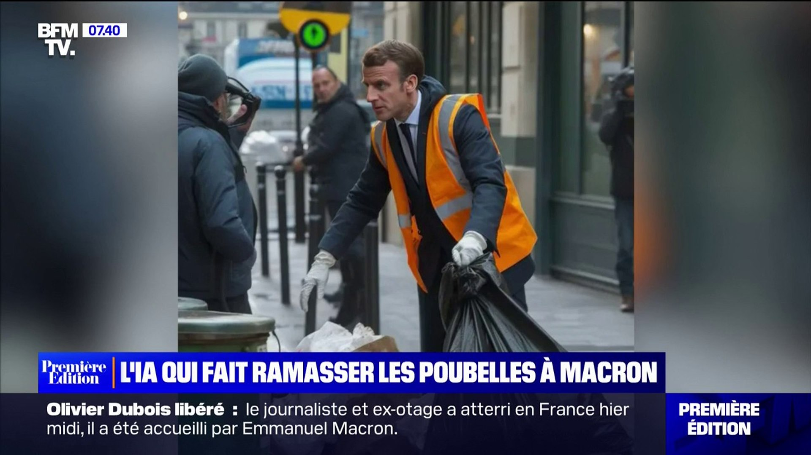
Depuis plusieurs jours, nombreuses sont les images mettant en
scène des dirigeants dans des situations caucasses et amusantes.
Par exemple, Macron en train de ramasser les poubelles, Macron
dans une manifestation, Trump arrêté par le FBI, etc.
Toutes ces images ont été généré par l'intelligence artificielle
Midjourney qui, depuis mars, a fait beaucoup de progrès et produit
maintenant des images d'un réalisme epoustouflant.
C'est outils permettant de créer facilement ce genre de contenu
les internautes multiplient les images "fake". Même si la plupart
des créateurs de ces photos indique que leurs images sont
créées par une IA. On peut rapidement se dire que des dérives
peuvent arriver très rapidement.
Twitter et TikTok se sont donc engagé vérifier ces vidéos ou images
et a apposé des avertissements dans le cas ou la manipualtion n'est pas
spécifié.
Article de BFMTV
Ce que m'a appris l'article
Cette article montre une utilisation sans réelles conséquences de l'intelligence
artificielle en montrant du contenu humoristiques. Mais donne à réfléchir
sur l'utilisation de ces technologies à but malveillant.
Revue de presse écrite par Quentin BEAUQUIER